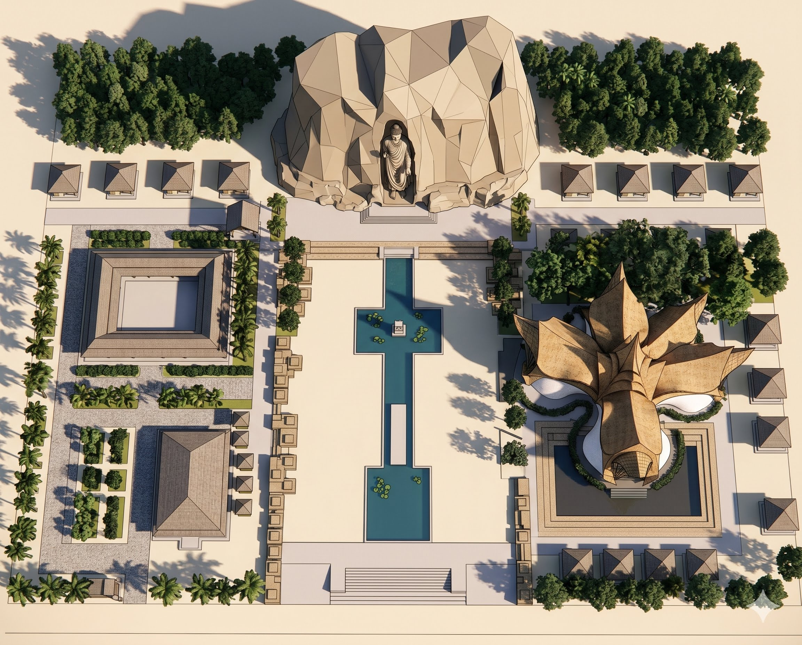

ณ โชคชัย นครราชสีมา
พุทธสถาปัตยกรรม จรรโลงพระพุทธศาสนา จากพระพุทธะบามิยัน แห่งอัฟกานิสถาน
สู่สถานธรรมมาตาปิตโร อำเภอโชคชัย จังหวัดนครราชสีมา
โครงการอันเป็นอนุสรณ์สถานแห่งศรัทธา สร้างขึ้นเพื่อจรรโลงพระพุทธศาสนา เพื่อสร้างความมั่นคง ความรักผูกพัน และจิตสำนึกที่ดีต่อพระพุทธศาสนา ให้คงอยู่กับโลกอย่างมั่นคงสืบไป
ออกแบบอย่างกลมกลืนกับธรรมชาติ เพื่อเป็นพุทธอุทยานแห่งการเรียนรู้และปฏิบัติธรรมอย่างยั่งยืน

ได้รับแรงบันดาลใจจากพระพุทธรูปแกะสลักในหน้าผาแห่งบามิยัน อัฟกานิสถาน อายุกว่า ๑,๕๐๐ ปี ออกแบบให้กลมกลืนกับภูมิทัศน์ธรรมชาติไทย
ใช้วัสดุธรรมชาติ ไม้ไผ่ หิน และดิน ตามหลักสถาปัตยกรรมพุทธวิถี เน้นความกลมกลืนกับระบบนิเวศท้องถิ่น
ออกแบบภูมิทัศน์ด้วยพรรณไม้ในพุทธประวัติ อาทิ ต้นโพธิ์ ต้นสาละ ต้นพะยอม และสวนสมุนไพรพุทธ
ศูนย์รวมการเรียนรู้ด้านพุทธศาสนา ศิลปะ วัฒนธรรม และวิถีชีวิตยั่งยืน
หลักสูตรนั่งสมาธิและเจริญสติ สำหรับผู้เริ่มต้นถึงระดับสูง
เรียนรู้ศิลปะพุทธศาสนา ประติมากรรม จิตรกรรม สถาปัตยกรรม
แปลงเกษตรอินทรีย์ตามแนวพระราชดำริ ปลูกพืชผักสวนครัว
สวนพฤกษชาติ รวบรวมต้นไม้ที่ปรากฏในพุทธประวัติกว่า ๘๐ ชนิด
หลักสูตรสำหรับเยาวชน ครู นักเรียน และองค์กร
พื้นที่โครงการทั้งหมด
ระยะเวลาดำเนินการ ๒๕๖๓–๒๕๗๐
งบประมาณโครงการ
สิ่งปลูกสร้างและอาคาร
พิธีทำบุญปรับพื้นที่โครงการพุทธอุทยานโชคชัย-บามิยัน สถานธรรมมาตาปิตโร อำเภอโชคชัย จังหวัดนครราชสีมา เพื่อเริ่มดำเนินการก่อสร้างในระยะต่อไป
อัปเดตความคืบหน้างานก่อสร้างองค์พระประธาน ซึ่งเป็นสัญลักษณ์สำคัญของโครงการพุทธอุทยานโชคชัย-บามิยัน สถานธรรมมาตาปิตโร
โครงการบรรพชาสามเณรภาคฤดูร้อน เพื่อปลูกฝังคุณธรรม จริยธรรม และพระพุทธศาสนาให้กับเยาวชน
สร้างบุญ สร้างธรรม สร้างอนาคตให้พระพุทธศาสนา
ร่วมเป็นส่วนหนึ่งของอนุสรณ์แห่งศรัทธาระดับโลก
ทุกวัน
เวลา 08:00–17:00 น.
(เปิดตลอดปี)
ต.ด่านเกวียน อ.โชคชัย
จ.นครราชสีมา 30190
ห่างจากตัวเมือง ~25 กม.
ทางหลวงหมายเลข 224
จากโคราชไป อ.โชคชัย
มีป้ายบอกทาง
ลานจอดรถขนาดใหญ่
รองรับรถยนต์และรถบัส
ไม่มีค่าใช้จ่าย
มูลนิธิสถานธรรมมาตาปิตโร
โทร: 044-XXX-XXXX
Line: @matabitaro
แต่งกายสุภาพ
ไม่สวมรองเท้าในอุโบสถ
รักษาความสงบ